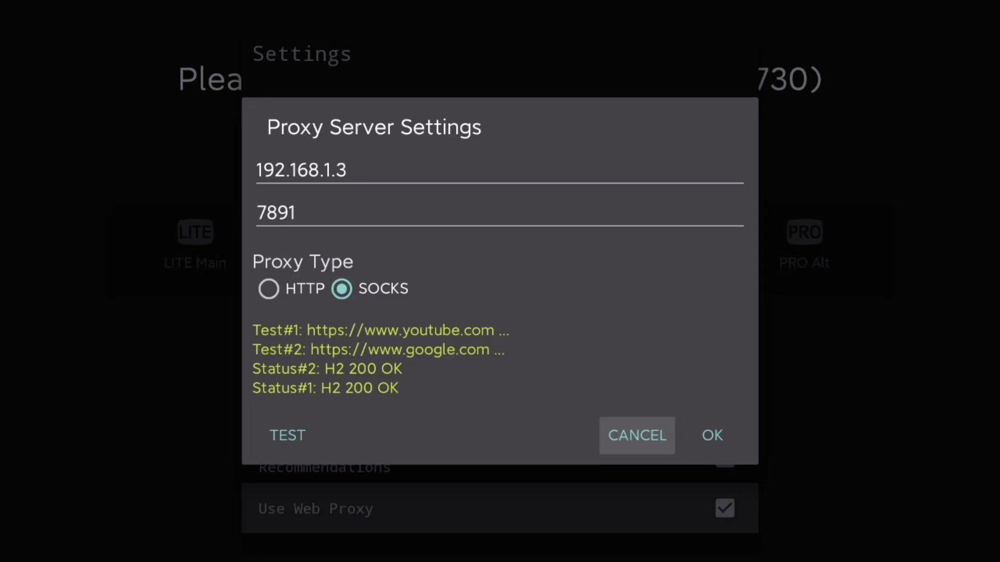

Hier nehmen wir an, dass wir wissen | Original, von KI übersetzt
Hier nehmen wir an, dass wir wissen, wie man das Internet wissenschaftlich nutzt. Wie kann man dann YouTube auf dem Fernseher ansehen? Das Flashen des Routers ist etwas umständlich. Hier verwenden wir eine App.
SmartYoutubeTV

Laden Sie es herunter. Installieren Sie es mit einem USB-Stick auf dem Fernseher.

Als nächstes wählen Sie in der Anwendung des Science-Internet-Clients die Option Allow connect from LAN aus. Dies bedeutet, dass andere Geräte im lokalen Netzwerk über dieses Gerät auf das Internet zugreifen können.
Gehen Sie dann zu den Einstellungen von SmartYoutubeTV und legen Sie den Port fest.

Nachdem Sie alles eingerichtet haben, klicken Sie auf die Schaltfläche Test, um es auszuprobieren. Beachten Sie, dass ich hier einen Proxy vom Typ SOCKS verwendet habe. Ich habe es einige Male mit HTTP versucht, aber es hat nicht funktioniert. Wenn der Test erfolgreich ist, klicken Sie auf OK und testen Sie es erneut. Außerdem müssen Sie nicht unbedingt 192.168.1.3 einstellen, das hängt davon ab, welche lokale IP-Adresse Ihr Computer im Netzwerk hat.
So einfach ist das, sehr praktisch.

gfreezy/seeker
Dies ist ein GitHub-Projekt. Die Projektseite enthält eine Bedienungsanleitung. Hier werden hauptsächlich einige zusätzliche Punkte ergänzt.

Es erreicht transparente Proxies durch die Verwendung von tun. Es implementiert Funktionen ähnlich dem Surge Enhanced Mode und dem Gateway Mode.
Zuerst habe ich seeker verwendet, um meinen Computer in einen Router für wissenschaftliches Surfen im Internet zu verwandeln. Hier sind meine Konfigurationen:
verbose: true
dns_start_ip: 10.0.0.10
dns_servers:
- 223.5.5.5:53
- 114.114.114.114:53
dns_timeout: 1s
tun_name: utun4
tun_ip: 10.0.0.1
tun_cidr: 10.0.0.0/16
dns_listen: 0.0.0.0:53
gateway_mode: true
ping_timeout: 2s
probe_timeout: 30ms
connect_timeout: 1s
read_timeout: 30s
write_timeout: 5s
max_connect_errors: 2
servers:
- name: HTTP-Proxy-Server
addr: 0.0.0.0:7890
protocol: Http
- name: HTTPS-Proxy-Server addr: 0.0.0.0:7890 protocol: Https
rules:
- ‘MATCH,PROXY’ ```
Zuerst habe ich einen socks5-Proxy verwendet. Die Konfiguration sah so aus:
servers:
- name: socks5 proxy server
addr: 0.0.0.0:7891
protocol: Socks5
Es gibt jedoch einige Probleme. Oft kann keine Verbindung hergestellt werden. In der Dokumentation steht folgender Abschnitt:
Bei der Verwendung eines SOCKS5-Proxys müssen alle direkt verbundenen Domains in der Konfigurationsdatei festgelegt werden. Wenn Sie beispielsweise SS oder Vmess verwenden, müssen Sie auch die Domains der SS- oder Vmess-Server in die Konfigurationsdatei aufnehmen. Andernfalls könnte es zu einer Endlosschleife kommen, die die ordnungsgemäße Nutzung verhindert.
Das könnte der Grund sein.
Die Verwendung von seeker bedeutet, dass ein Computer benötigt wird, der es ausführt und als Router fungiert. Die Konfiguration mit proxy hingegen ist viel flexibler. Ich kann einen iPhone- oder Android-Handy verwenden, um den Proxy-Port freizugeben.
Fernseh-Screenshot
Beim Schreiben dieses Artikels habe ich überlegt, wie man Screenshots auf dem Fernseher macht. Bei mir zu Hause verwenden wir einen Xiaomi-Fernseher. Man kann zweimal hintereinander die Home-Taste auf der Fernbedienung drücken, um das Anwendungsverwaltungsmenü aufzurufen.

Siehst du den Screenshot-Button? Dann kannst du es auch ganz einfach mit WeChat teilen. Hier kannst du auch alle Anwendungen schließen. Wenn einige Anwendungen hängen bleiben, kannst du sie auf diese Weise behandeln.
Gut. Lassen Sie uns die Welt mit einem großen Fernseher betrachten.